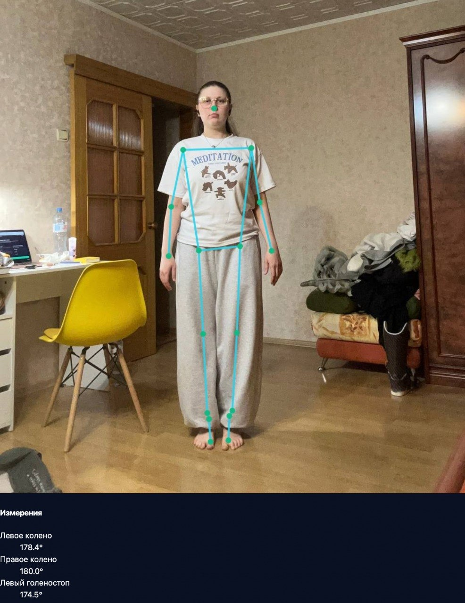
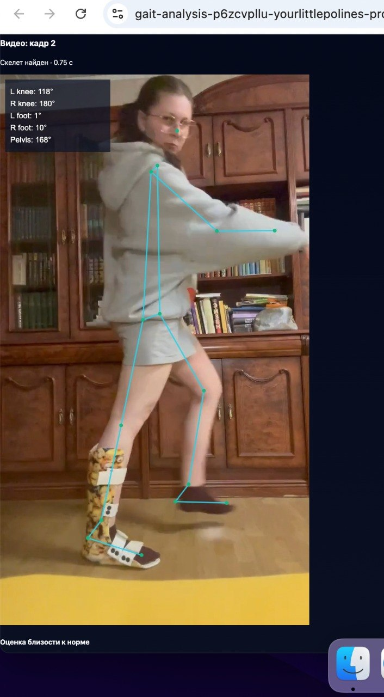
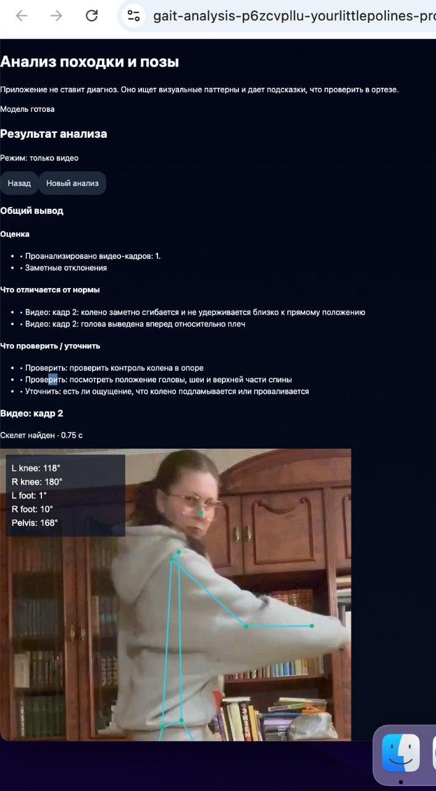
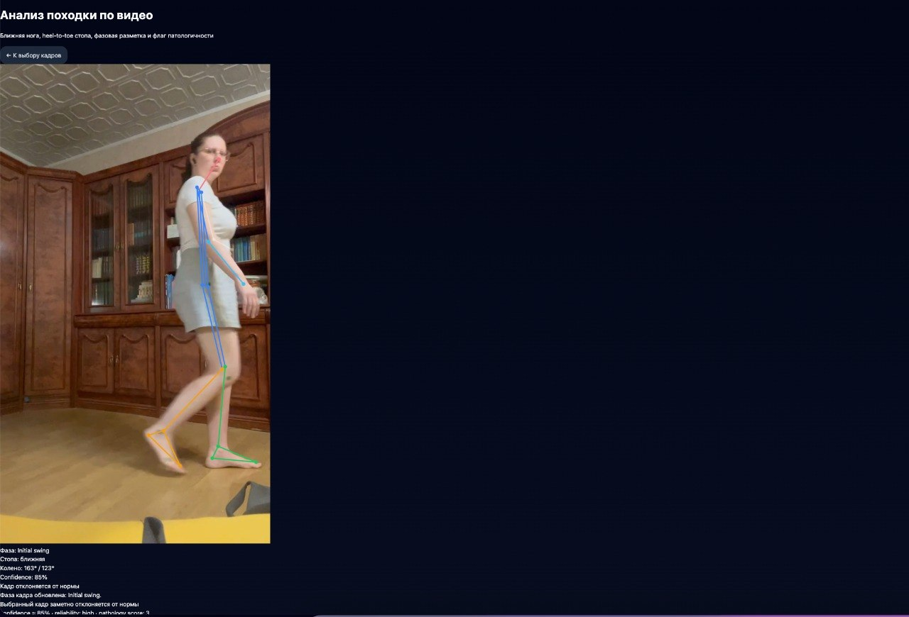
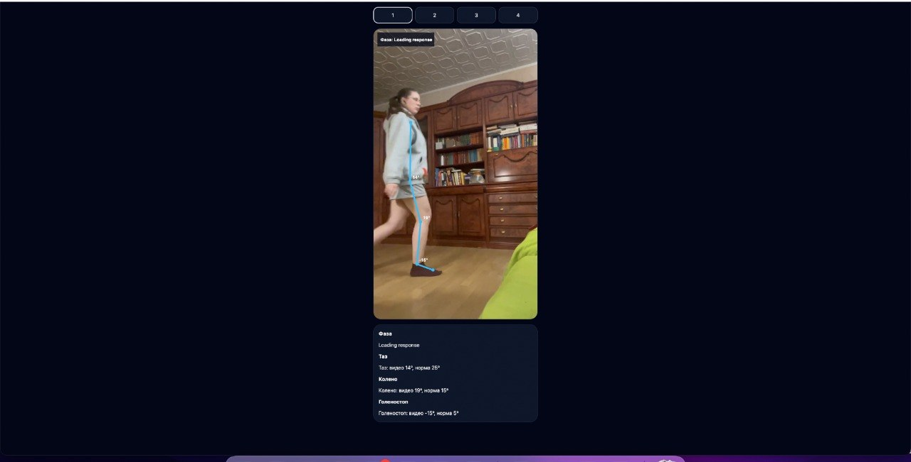

Три режима анализа
Приложение поддерживает анализ только фото, только видео и совместный режим «фото + видео».
Компьютерное зрение · ассистивные технологии · реабилитация
Развивающийся MVP на MediaPipe: анализирует фотографии и выбранные кадры видео, рассчитывает суставные углы и формирует подсказки о паттернах походки и позы.

01 · Обзор
Проект вырос из моей работы в ортезировании и протезировании, где наблюдение за походкой и оценка позы помогают понять взаимодействие человека с техническим средством реабилитации.
MVP проверяет, может ли обычная камера смартфона дать полезные первичные наблюдения о позе и походке без лаборатории ходьбы, множества датчиков и дорогой системы захвата движения.
02 · Функции
Приложение поддерживает анализ только фото, только видео и совместный режим «фото + видео».
MediaPipe Pose Landmarker определяет ключевые точки тела на загруженных изображениях и выбранных кадрах видео.
Приложение рассчитывает углы коленей и стоп, наклон таза и плеч, наклон корпуса и показатели асимметрии.
Из загруженного видео извлекаются кадры, чтобы пользователь мог выбрать моменты из разных фаз шага.
Поверх изображения отрисовываются связи скелета, ключевые точки и подписи углов.
Формируется компактная сводка: отклонения, пункты для проверки, вопросы, подсказки и ограничения конкретного кадра.
03 · Процесс
04 · Материалы




05 · Технические заметки
React, JavaScript, MediaPipe Tasks Vision, Pose Landmarker, отрисовка Canvas, извлечение кадров видео в браузере, развёртывание на Vercel.
Система работает с двумерными изображениями, поэтому ракурс камеры, одежда, освещение, выбор кадра и видимость ключевых точек сильно влияют на результат. Это прототип для наблюдения и подсказок, а не диагностический инструмент.
Улучшить определение фаз шага, добавить сравнение нескольких временных точек, более ясные подсказки с фокусом на ортезы и продольное отслеживание адаптации во времени.
06 · Код
import React, { useEffect, useMemo, useRef, useState } from "react";
import { FilesetResolver, PoseLandmarker } from "@mediapipe/tasks-vision";
const MODEL_URL =
"https://storage.googleapis.com/mediapipe-models/pose_landmarker/pose_landmarker_full/float16/latest/pose_landmarker_full.task";
const ANALYSIS_MODES = {
VIDEO: "video",
PHOTO: "photo",
BOTH: "both",
};
const LANDMARKS = {
nose: 0,
leftShoulder: 11,
rightShoulder: 12,
leftHip: 23,
rightHip: 24,
leftKnee: 25,
rightKnee: 26,
leftAnkle: 27,
rightAnkle: 28,
leftHeel: 29,
rightHeel: 30,
leftFootIndex: 31,
rightFootIndex: 32,
};
function computeMetrics(landmarks, view) {
const l = getPointGetter(landmarks);
const leftKneeAngle = angleAt(l("leftHip"), l("leftKnee"), l("leftAnkle"));
const rightKneeAngle = angleAt(l("rightHip"), l("rightKnee"), l("rightAnkle"));
const leftFootPitch = lineAngle(l("leftHeel"), l("leftFootIndex"));
const rightFootPitch = lineAngle(l("rightHeel"), l("rightFootIndex"));
return {
leftKneeAngle,
rightKneeAngle,
leftFootPitch,
rightFootPitch,
};
}